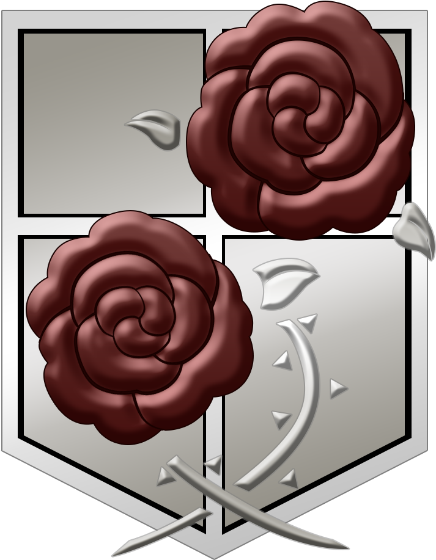
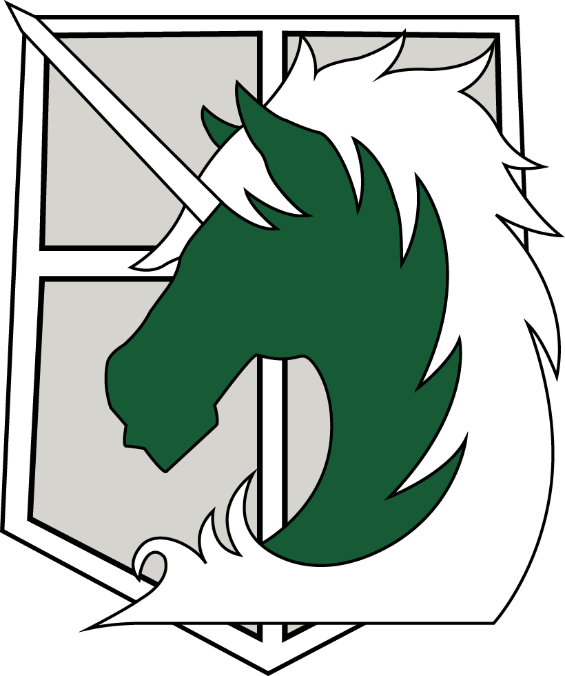
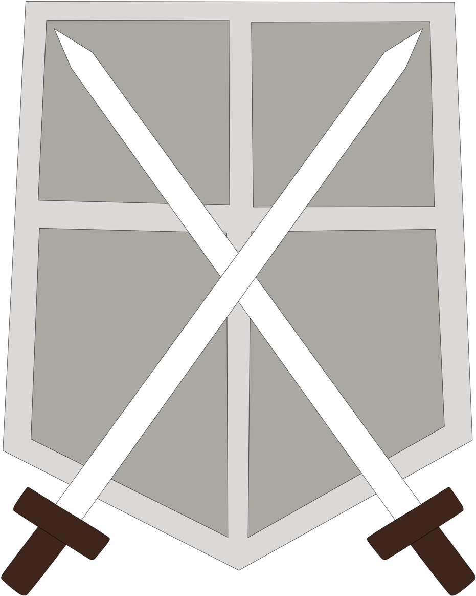

The Military of Paradise Island
The Military, also known as the Armed Forces of Eldia, are the main militia of the inhabitants of Paradis Island, who were originally trained for the purpose of defending said territory from the Titans. It is a full-time, professional, and trained army to face the Titans. The army is divided into three squads: The Survey Corps; the Garrison; and the Military Police Brigade. We shall now explain each of these units In the Attack on Titan universe, there are several military units that play important roles in defending humanity against the Titans. Here's a brief explanation of each unit:
-
Scout Regiment:
Also known as the Survey Corps, this is the most prestigious and dangerous unit in the military. They are responsible for exploring the outside world and gathering information about the Titans, and are often sent on expeditions beyond the walls. Members of the Scout Regiment are highly skilled in combat and vertical maneuvering, using their 3D maneuver gear to navigate the terrain and engage Titans.
-

-
Garrison Regiment:
This unit is responsible for maintaining order and defending the walls of the three innermost districts. They are made up of soldiers who are less skilled in combat than those in the Scout Regiment, but are still highly trained and well-equipped. The Garrison Regiment also provides support to other units during Titan attacks.
- 
-
Military Police Bridage:
This unit is responsible for maintaining law and order within the innermost district, which is the safest area within the walls. They are made up of soldiers who are considered to be the best of the best, and have a reputation for being corrupt and elitist. Members of the Military Police Brigade are rarely involved in combat, but instead focus on maintaining their privileged position within society.
- 
-
Training Corps:
This unit is responsible for training new recruits and preparing them for the challenges of the military. It is considered to be the lowest rank in the military, and recruits are often subjected to harsh training and discipline. Once they graduate from the Training Corps, soldiers are assigned to one of the other units based on their skills and abilities.
- 